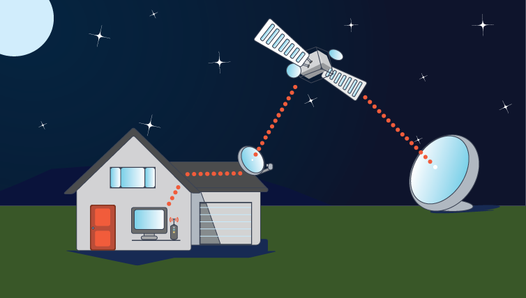

Aitor Network Systems
El internet Satelital ha sido una tecnologia que lleva tiempo desarollandose
siempre inovando hasta el dia de hoy que es una alternativa a la brecha de
conexion en todo el mundo
En AitorNetworkSystems nos esforzamos dia a dis por traer los mejores Servicios
de calidad al alcance de todos y para todas las necesidades
Te invitamos a conocer nuestros principales Servicios y elegir el mejor en base
a tus necesidades, estamos seguros que te llevaras la mejor opcion
¿Como funciona el internet Satelital?
Internet por satélite funciona de manera similar a la televisión por satélite. Comienza con
un proveedor de servicios de Internet que envía satélites al espacio
para orbitar alrededor de la Tierra. Luego, ese ISP depende de una señal
enviada a través de uno de esos satélites en órbita terrestre baja o alta y
un plato receptor que capta esa señal.
